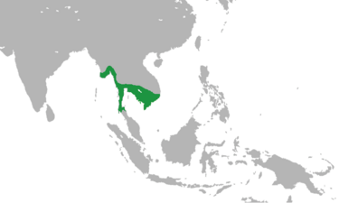

អរិយធម៌ខ្មែរនៅសម័យអាណាចក្រភ្នំ
ដំណើរវិវវត្តន៍នៃប្រវត្តិសាស្ត្របានបង្ហាញថា អាណាចក្រភ្នំបានទទួលឥទ្ធិពលឥណ្ឌាយ៉ាងខ្លាំងអស់ពីរលើក គឺមួយលើកនៅដើមគ.ស.ទី១និងមួយទៀតនៅដើអរិយធម៌មគ.ស.ទី៥។ តទៅទៀត យើងនឹងសាកល្បងគូសវាសរូបភាពសង្គមខ្មែរនៅសម័យនោះ ដោយពឹងផ្អែកលើឯកសារចិន និងសិលាចារឹក។ឯកសារចិនជាច្រើនបានបញ្ជាក់ថា មនុស្សនៅសម័យអាណាចក្រភ្នំមានសម្បុរខ្មៅ សក់រួញអង្គាដីរូបច្រើនមិនសូវបាន។ ពត៌មានប៉ុណ្ណោះអាចប្រាប់យើងពីលក្ខណៈនរវិទ្យារបស់ជនជាតិខ្មែរ-មនជាទូទៅ និងជាពិសេស របស់ជនជាតិខ្មែរយើងនេះផងដែរ។ ដែលចិននិយាយថាមានសម្បុរខ្មៅ ក្តី រូបច្រើនមិនសូវបាន បើនិយាយប្រៀបធៀបទៅនឹងលក្ខណៈជនជាតិចិន។ ប៉ុន្តែដោយកង្វះឯកសារជាភាសាខ្មែរនៅសម័យនោះ ទើបអក្នសិក្សាស្រាវ ជ្រាវបានបញ្ចេញទស្សនៈប្លែកៗ ចំពោះម្ចាសដើមនៃអាណាចក្រភ្នំ អក្នខ្លះយល់ថារដ្ឋនេះជារដ្ឋឥណ្ឌា អក្នចខ្លះទៀតយល់ថាជារដ្ឋមន ឫ ខ្មែរ-មន និងអក្នខ្លះយល់ថាជាម៉់ាឡាយ៉ូទៅវិញ។ តែតាមការពិតជាតិសាសន៍ទាំងនេះ សុទ្ធសឹងតែបានរស់នៅក្នុងអាណាចក្រភ្នំជាមួយគ្នាទាំងអស់ ហើយមានអក្នខ្លះជាអក្នកាន់អំណាចគ្រប់គ្រងគេ(ខ្មែរ និងឥណ្ឌាខ្លះ) ឯអក្នឯទៀតត្រូវបានគេគ្រប់គ្រងវិញ(មន ម៉ាឡាយូ) ឯកសារចិនបាននិយាយទៀតថា មនុស្សនៅសម័យអាណាចក្រភ្នំច្រើន លែងខ្លួន អក្នក្រស្លៀកសារុងអំបោះដើរជើងទទេ រីឯអក្នមាន និងនាម៉ឺនវិញស្លៀកសារុងចរបាប់ពាក់ស្បែងជើង។ ផ្ទះសង់ខ្ពស់ពីដីប្រក់ស្លឹកចាក ដែលដុះនៅមាត់សមុទ្រហើយមានការតុបតែង។ ផ្ទះទាំងនោះសុទ្ធតែសង់ពីឈើ ដែលគេកាប់យកមកពីក្នុងព្រៃ មានរបងពទ្ធជុំវិញ ហើយផ្តុំគ្នាជាភូមិ ដែលមានផ្ទះពី៥០ ទៅ៦០ផ្ទះ ដោយមានស្រះមួយសម្រាប់យកទឹករួមគ្នា។ មនុស្សនៅសម័យអាណាចក្រភ្នំគ្មានគំនិតរញិមរញ៉ាំ ត្រង់ណាស់មិនចេះលួចទេ មានការប៉ិនប្រសប់ ហើយខិល ព្រោះចូលចិត្តចាប់យកមនុស្សនៅក្រុងជិតខាង ដែលមិនគោរពរាប់អានខ្លួនមកធ្វើជាខ្ញុំកំដរ។ នៅពេលទំនេរគេចូលចិត្តលេងប្រជល់មាន់ និងប្រជល់ជ្រូក។ សង្គមអាណាចក្រភ្នំជាសង្គម " មេនិយម" គឺគេចាត់ទុកស្រ្តីជាធំនៅក្នុងគ្រួសារក៏ដូចជាសង្គមជាតិផងដែរ ៖ រឿងព្រះនាងលីវយី លើកទ័ពទៅតទល់ និងព្រះបាទហ៊ុនទៀនជាភស្តុតាងស្រាប់។ ឯកសារចិនបាននិយាយបន្តទៀតថា ពិធីបុណ្យការ និងបុណ្យសព្វមានលំនាំដូចនៅលីនយី ហើយបានបញ្ជាក់ថានៅស្រុកនោះគឺស្រីទៅដណ្តឹងប្រុស បើដូចច្នោះអក្នស្រុក"ភ្នំ" សម័យនោះច្បាស់ជានៅនិយមឲស្រីទៅដណ្តឹងប្រុសនៅឡើយ។ នេះជាធាតុមួយទៀតសម្រាប់បញ្ជាក់ពីអត្ថិភាពនៃលទ្ធិ "មេនិយម" ទៀតដែរ។ ចំពោះរឿងនេះពួកចិនបានកតើសម្គាល់ទៀតថា នៅក្នុងគ្រួសារពួកស្រីប្រុសអាចទាក់ទងគ្នាបានតាមទំនើងចិត្ត។ ក្នុងករណីកាន់ទុក្ខ គេត្រូវកោរសក់ និងកោរពុកមាត់ ឯវិធីរំលាយសពមាន៤យ៉ាងគឺ៖ ១.បោះសពចោលទៅក្នុងទន្លេ ២.បូជាដោយភ្លើង ៣.យកសពទៅកប់ ៤.យកសពទៅដាក់ចោលក្នុងព្រៃស្មសានឲសត្វស៊ី ក្នុងករណីបូជាដោយភ្លើង គេតែងតែប្រមូលធាតុដែលនៅសល់យកទៅដាក់ក្នុងកោដ្ឋមួយបិទជិត ហើយយកទៅបោះចោលក្នុងទឹកទនេ។ បើជាព្រះមហាក្សតកោដ្ឋត្រូវធ្វើពីមាស បើជានាម៉ឺនសព្វមុខមន្ត្រី គេប្រើកោដ្ឋធ្វើអំពីប្រាក់ ហើយបើជាប្រជារាស្រ្តសាមញ្ញគេប្រើកោដ្ឋដី ។ អក្នស្រុកសម័យអាណាចក្រភ្នំចូលចិត្តរកវិធីអស្ចារ្យដើម្បីស្វែងរកកាពិត។ កាលណាមានបាត់របស់អ្វីមួយ គេក៏យកបាយមួយពំនូតទៅដាក់នៅចំពោះមុខព្រះភ័ក្រ្ភទេព្តា រួចគេអង្វរសូមឲព្រះអង្គជួយបង្ហាញមុខជនទុច្ចរិត។ ស្អែកឡើងគេយកបាយទៅចែកឲពួកខ្ញុំនៅក្នុងផ្ទះបរិភោគ: ក្នុងមាត់របស់ចោរនឹងមានឈាមហូរយ៉ាងជាក់ស្តែង ហើផយវាមិនអាចទំពារបាយបានទៀតផង ឯមាត់របស់ចោរទៀតត្រូវបាយនោះអាចរអិលទៅក្នុងមាត់បានយ៉ាងស្រួល។ ម្យ៉ាងទៀតបើកាលណាមានជនជាប់ចោទ គេឲជននោះអត់បាយ៣ថ្ងៃ រួចគេតម្រូវឲលូកយកវត្ថុផ្សេងៗចេញពីទឹកកំពុងពុះ ឫកាន់ពូថៅច្រវ៉ាក់ដុតក្រហមដើរ៧ជំហ៊ាន។ បើមានកំហុសរមែងដៃជននោះក្តៅរលាករលួយ ផ្ទុយទៅវិញបើជននោះគ្មានកំហុសគឺគ្មានហ្មងអ្វីទាំងអស់។ នយោបាយ និងរដ្ឋបាល ចានជើងធ្វើពីអិដ្ឋ អាណាចក្រភ្នំមានការរៀបចំផ្នែករដ្ឋបាលតាមបែបឥណ្ឌា។ អក្នដឹកនាំរដ្ឋគឺជាព្រះរាជាដែលគង់នៅក្នុងប្រាសាទឈើ មានច្រើនជាន់ហើយមានរបងពទ្ធជុំវិញ។ ព្រះរាជាមានឋានន្តរនាមជា ក្រុងវ្នំ ព្រោះយកតាមភ្នំដែលព្រះអង្គយាងឡើងធ្វើសក្ការៈបូជាចំពោះព្រះមហេស្វរ និងមានតំកល់លិង្គព្រះគិរិស គឺឈ្មោះព្រះឥសូរដែលសណ្ឌិតលើភ្នំនោះ។ដោយហេតុតែព្រះអង្គមានឋានៈជាទំណាងអទិទេព ដូច្នោះហើយបានជាអំណាចរបស់ព្រះអង្គមានទំហំធំទូលាយណាស់។ រាជសម្បត្តិត្រូវបន្តពីបិតាទៅបុត្រ នេះជាហេតុនាំឲមានវិបត្តិក្នុងរាជវង្សានុវង្សច្រើនលើកច្រើនគ្រាណាស់ដែរ។ ប៉ុន្តែរាស្រ្តអាចលើកវរជនដែលពួកគេពេញចិត្តឲឡើងកាន់អំណាចដែរ ដូចជាករណីរបស់ព្រះបាទហ្វាន់ ចេម៉ាន់ និងកៅណ្ឌីន្យទី២ ជាដើម។ អធិរាជអាណាចក្រភភ្នំនិយមធ្វើនយោបាយពង្រីកទឹកដី ជាក់ស្ដែងព្រះបាទ ហ្វាន់ ចេម៉ាន់ បានលើកទ័ពជើងទឹកទៅវាយយកបានរដ្ឋជាច្រើនដាក់ជារដ្ឋចំណុះ ក្នុងចំនោមរដ្ឋទាំងនោះខ្លះជាខ្មែរ ខ្លះទៀតជាចាម ជាមន ឫម៉ាឡាយ៉ូជាដើម។ ក្នុងសង្គា្រមវាទីយកទឹកដី គេតែងចាប់យកឈ្លើយសឹកសង្គ្រាមមកធ្វើជាទាសាទាសី។ ដោយអាស្រ័យហេតុនេះហើយបានជាយើងនិយាយថា អាណាចក្រភ្នំជា អធិរាជាណាចក្រ ហើយព្រះរាជាមានឋានៈជាមហារាជ ឫសាវ៌កៅ (ស្តេចចក្រវាឡ)។ រដ្ឋដែលស្ថិតក្រោមការគ្រប់គ្រងរបស់អាណាចក្រភ្នំសុទ្ធតែមានស្តេចសោយរាជ្យ ប៉ុន្តែស្តេចទាំងនោះ ជាសាមន្តរាជ របស់អធិរាជអាណាចក្រភ្នំ ហើយត្រូវនាំសួយសាអាករមកថ្វាយអាណាច្រភ្នំជារៀងរាល់ឆ្នាំ។ រដ្ឋខ្លះទៀតមានស្តេចសោយរាជខ្លះដែរ តែស្តេចទាំងនោះជារាជបុត្រ ឫជាញាតិរបស់អធិរាធភ្នំ។ ព្រះបាទកៅណ្ឌិន្យទី១បានប្រទានរដ្ឋបែបនេះថ្វាយទៅព្រះរាជបុត្ររបស់ព្រះអង្គ ប៉ុន្តែព្រះបាទហ៊ុន ប៉ាន់ហួន បាន រំលាយរដ្ឋបែបនេះចោលទៅវិញ។ រដ្ឋបែបទី២នេះហៅថា វិស័យរដ្ឋ ជាសម្បត្តិផ្ទាល់របស់អធិរាជភ្នំ។ គួរកត់សម្គាល់ថារចនាសម្ព័ន្ធនយោបាយ ដូចបានពោលរួចមកហើយនេះឃើញថា នាំឲមានគ្រោះថ្នាក់ច្រើនដែរ ព្រោះបើកាលណាអំណាចកណ្តាលធ្លាក់ចុះ ពួកសាមន្តរាជតែងតែបះបោរឡើយទាមទារឯករាជ្យតែរៀងៗខ្លួន ដូចជាករណីរបស់រដ្ឋ ចេនឡា នៅស.វទី៦ជាដើម។ ក្នុងវិស័យនយោបាយក្រៅប្រទេស អាណាចក្រភ្នំនិយមចងសម្ព័ន្ធស្ពានមេត្រីជាមួយប្រទេសធំៗ ដូចជាប្រទេសឥណ្ឌា និងជាពិសេសប្រទេសចិន។ នយោបាយការទូតខ្មែរមានសកម្មភាពយ៉ាងមមាញឹក ចាប់តាំងពីរជ្ជកាលរបស់ព្រះបាទ ហ្វាន ឆាន ។ ទំនាក់ទំនងក្រៅប្រទេសនេះ មាននយោបាយ ពាណិជ្ជកម្ម និងវប្បធម៌ផងដែរ។ នៅក្បែរព្រះអធិរាជ គេឃើញមានមន្ត្រីបំរើព្រះរាជាពីរបែប គឺមន្រ្តីឆ្វេង និងមន្រ្តីស្តាំ។ មន្រ្តីឆ្វេងគឺជាមន្ត្រីដែលអង្គុយគាល់នៅពីខាងឆ្វេង រីឯមន្ត្រីស្តាំវិញគឺជាមន្រ្តីដែលមានសក្តិធំជាង ហើយអង្គុយនៅពិខាងស្តាំព្រះរាជា។ ក្រៅពីនេះគឺនៅមានមន្ត្រីផ្សេងៗទៀត ដែលខ្លះឈរត្រួតត្រានៅតាមអាណាខេត្ត។ ព្រះអធិរាជតែងតែប្រទានសវនាការជាញឹកញាប់ដល់ប្រជារាស្រ្ត និងពួកជនបរទេសដែលបានយកដង្វាយផ្សេងៗមកថ្វាយព្រះអង្គមិនដែលខាន។ ក្នុងករណីនេះព្រះអធិរាជទ្រង់គង់ប្រថាប់ដោយទំលាក់ព្រះបាទឆ្វេងដល់ដី ហើយបញ្ឈរព្រះបាទស្តាំ រួចគេក្រាលកំរាលមួយផ្ទាំងនៅចំពីមុខរបស់ព្រះភ័ក្រ្ភព្រះអង្គ ដើម្បីយកភាជន៍មាស និងភាជន៍ដុតគ្រឿងក្រអូបមកតំកល់លើកំរាលនោះ។ កាលណាយាងចូលឫ យាងត្រឡប់មកវិញព្រះអង្គតែងប្រថាប់លើខ្នងដំរី។ ឯពួកស្រីស្នំ និងពួកមន្ត្រីជាបរិវារក៏ជិះដំរីដែរ ព្រះអធិរាជទ្រង់សព្វព្រះហឫទ័យនឹងការបរបាញ់ណាស់ ហើយយាងទៅម្តងៗអស់ពេលរាប់ខែ។ នៅអាណាចក្រភ្នំ រាស្ត្របង់ពន្ធដារជូនរាជការជាមាស ប្រាក់ត្បូងគុជ ឬគ្រឿងករអូបផ្សេងៗ។ គេមិននិយមធ្វើគុកដាក់ជនទុច្ចរិតទេ។ បើកាលណាមានកំហុសស្រាលគេពិន័យជនមានទោស តែបើមានកំហុសធ្ងន់វិញគេយកមនុស្សមានទោសនោះ ទៅឲក្រពើ ឬសត្វសាហាវស៊ីតែម្តង។ ក្នុងរយៈពេលបីថ្ងៃបើសត្វអស់នោះមិនព្រមស៊ីទេ គេចាត់ទុកថាជននោះគ្មានកំហុសហើយត្រូវលើកលែងទោសឲរួចខ្លួន។
សកម្មភាពសេដ្ឋកិច្ច
អាណចក្រភ្នំ ដែលមានឈ្មោះថាថ្កុំថ្កើងរុងរឿង ក៏ដោយសារតែសារៈសំខាន់នៃសេដ្ឋកិច្ច ឯសកម្មភាពសេដ្ឋកិច្ចចំបងនូវសម័យនោះគឺ កសិកម្មនិង ពាណិជ្ជកម្ម។ កសិកម្មមានការរីកលូតលាស់ខ្លាំង ក៏ដោយសារតែមានភាពជោគជ័យលើនយោបាយទឹក យ៉ាងណាមិញ អក្នស្រុកចេះជីកព្រែកខ្វាត់ខ្វែងដែលមានសល់រហូតមកដល់សព្វថ្ងៃ នៅកម្ពុជាក្រោមភាគខាងលិច។ តាមយោបល់អ្នកជំនាញការ បណ្តាញព្រែកជីកនេះត្រូវបានគេកសាងឡើង សំរាប់បង្កូរទឹកជំនន់ទន្លេមេគង្គចេញផង និងសំរាប់លាងឲស្អាតនូវទឹកភក់ល្បាប់ និងបន្សាបជាតិអំបិលជ្រាបចូលទៅក្នុងដីផង ហើយជាគមនាគមន៍រវាងទីក្រុងទាំងឡាយ និងសម្រាប់ឲសំពៅ ទូកឆ្លងកាត់ទៅបានពីសមុទ្រចិន ទៅឈូងសមុទ្រខ្មែរដោយមិនចាំបាច់ព័ទ្ធតាមចុងជ្រោយទឹកខ្មៅនោះទេ។ ក្រៅពីរបរស្រែចំការចិនថា"គេព្រោះមួយឆ្នាំរួចគេច្រូតបានបីដូវ" របរខាងចំការទំនងជាមានការលូតលាស់ណាស់ដែរ គេដាំ ក្រូច ទទឹម អំពៅ ស្លា -ល-។ ពាណិជ្ជកម្មជាវិស័យមួយមានការរីកលូតលាស់ណាស់ដែរ ជាភស្តុតាងគេបានរកឃើញស្នាមកំពង់ផែសមុទ្រមួយយ៉ាងធំ។ តាមយោបល់អក្នជំនាញការ គេថាកំពង់ផែនេះ (កំពង់ផែអូរកែវ) ជាកំពង់ផែអន្តរជាតិ ព្រោះកំណាយតំបន់បានរកឃើញវត្ថុផ្សេងៗ ដែលមពីប្រទេសឆ្ងាយៗដូចជា ចក្រភពរ៉ូម៉ាំង ពិភពអ៊ីរ៉ង់ ប្រទេសឥណ្ឌារ ។ ដូច្នេះឃើញថា នៅសម័យនោះអ្នកស្រុកអាណាចក្រភ្នំ មិនគ្រាន់តែធ្ចើជំនួញជានមួយប្រទេសជិតខាងប៉ុណ្ណោះទេ គឺបានទាក់ទងជំនួយនេះជាមូយ ចិន ឥណ្ឌា រ៉ូម៉ាំង និងពែរ្សទៀតផង។ ហើយការដែលអក្នជំនួញមានលទ្ធភាពអាចធ្វើដំណើរទៅឆ្ងាយបាន ក៏ព្រោះតែមានបច្ចេកទេសខ្ពស់ក្នុងការស្ថាបនាសំពៅធំៗ សម្រាប់ឆ្លងកាត់សមុទ្របាន។ ឯកសារចិនថាមានសំពៅប្រវែង៣០ម ក្បាលនិងកន្សៃមានរាងជាក្បាល និងកន្ទុយសត្វត្រី។ ទំនិញដែលគេលក់ដូរភាគច្រើនជា មាស ប្រាក់ សំពត់ព្រែ គ្រឿងកែវ -ល- ។ ឯកសារបាននិយាយថាអាណាចក្រភ្នំជាកន្លែងកើត មាស ប្រាក់ ទង់ដែង សំណបាហាំង គ្រឿងក្រអូប ភ្លុកដំរី និង ពេជ្រ ។ ឯកសារនេះបានបញ្ជាក់ទៀតថា ពេជ្រនេះគេមុជទៅរកនៅបាតសមុទ្រ ហើយមានភាពរឹងណាស់យកដែកដំមិនខូចទេ តែខូចដែកវិញ។ ម្យ៉ាងវិញទៀត អ្នកស្រុកមានភាពប៉ិនប្រសប់ណាស់ក្នុងរបរធ្វើជាជាងមាសប្រាក់។ អក្នស្រុកប៉ិនណាស់របរសូន្យរូប ត្បាញសូត្រ ចរបាប់ ស្លកែវ-ល- ។
វប្បធម៌

ឯកសារចិនបាននិយាយថាអាណាចក្រភ្នំមានសៀវភៅ និងកន្លែងទុក្ខបណ្តាសារ តែគួរឲស្តាយព្រោះសៀវភៅទាំងនោះប្រហែលជាត្រូវវិនាសបាត់បង់អស់ទៅហើយ ដែលជាហេតុនាំឲយើងមានការលំបាកច្រើនក្នុងការស្រាវជា្រវពីប្រវត្តិសាស្រ្តខ្មែរក្នុងសម័យនោះ។ សព្វថ្ងៃយើងមិនដឹងថាអក្សរ និងភាសាដែលដូនតាយើងប្រើសៀវភៅទាំងនោះមានបែបផែនយ៉ាងណានោះទេ។ បើយើងសំអាងទៅលើសិលាចារឹកទាំង៤ផ្ទាំង ដែលគេរកឃើញរហូតមកដល់សេព្វថ្ងៃឃើញថា ភាសាផ្លូវការក្នុងសម័យនោះគឺភាសាសំស្រ្កឹក។ ត្រង់នេះមិនមែនមានន័យថានៅសម័យនោះគេមិនប្រើភាសាខ្មែរសោះនោះទេ ឈ្មោះស្រុកក្តី (វ្នំ) ឈ្មោះរាជធានី (ទមាក់ ឬ ទល្មាក់) ជាភស្តុតាងមួយបញ្ជាក់ថាភាសាខ្មែរក៏គេប្រើទន្ទឹមនឹងភាសាសំង្រ្កឹតដែរ។ គេសង្ឃឹមថា នាពេលអនាគតអក្នស្រាវជ្រៀវនឹងរកឃើញសិលាចារឹកជាភាសាខ្មែរបូរាណក្នុងចំណោមសិលាចារឹកប្រើភាសាខ្មែរបុរាណដែលគ្មានចុះកាលកំណត់ ប៉ុន្តែទម្រង់អក្សរអាចឲភ្ជាប់មកសម័យអាណាចក្រភ្នំបាន។ ក្នុងវិស័យជំនឿសាសនា មនុស្សនៅសម័យអាណាចក្រភ្នំកាន់សាសនាធំៗទាំងពីររបស់ឥណ្ឌា គឺព្រហ្មណ៍សាសនា និងព្រះពុទ្ធសាសនា តែគេមិនដឹងច្បាស់ថាសាសនាមួយណាបានចូលមកស្រុកយើងមុនគេនោះទេ។ បើតាមឯកសារខ្លះ ព្រះបាទអសោក បានបញ្ជូនសមណទូត២អង្គមកកាន់សុវណ្ណភូមិ ដើម្បីផ្សាយព្រះពុទ្ធសាសនានៅសតវត្សទី៣មុនគ្រិស្តរាជ ។ គេមិនដឹងច្បាស់ថាសុវណ្ណត្រូវនឹងតំបន់ណាមួយ ឬស្រុកណាមួយឲប្រាកដនោះទេ។ អក្នសិក្សាស្រាវជ្រាវគ្រាន់តែស្របគ្នាថា សុវណ្ណភូមិនេះត្រូវនឹងភូមិភាគអាស៊ីអាគ្នេយ៍នេះឯង។ ម្យ៉ាងទៀតបុរាណវត្ថុផ្សេងទាក់ទងនឹងព្រះពុទ្ធសាសនាដែលគេរកឃើញនៅតំបន់ផ្សេងៗ នៅអាស៊ីអាគ្នេយ៍យើងនេះមានអាយុនៅស.វ.ទី៣-៤ នៃគ.ស. ហេតុនេះបានជាព្រះពុទ្ធសាសនាឲផ្លែផ្កាតែនៅស.វ.ទី៣-៤នៃគ.ស.ទៅវិញ គឺអស់រយៈពេលដល់ទៅ៦ ឬ៧ ស.វ.។ តែទោះបីជាយ៉ាងនេះក៏ដោយ ក៏អាចដឹងថាព្រះពុទ្ធសាសនាដែលនាំចូលស្រុកយើងដំបូងនោះគឺ ព្រះពុទ្ធសាសនានិកាយហីនយាន ប្រើភាសាសំង្រ្កឹតដែលឥណ្ឌានៅអមវតីរាប់អាននៅស.វ.ទី២-៣នៃគ.ស.។ សិលាចារឹករ៉ូកាញ់ និងសិលាចារឹកតាព្រហ្មបាទីអាចវបញ្ជាក់ពីលក្ខណៈនេះបាន។ ព្រះពុទ្ធសាសនាមានភាពរុងរឿងនៅស.វ.ទី៥-៦ ក្នុងរជ្ជកាលព្រះបាទកៅណ្ឌិន្យជ័យវរ្ម័ន្ម និងរុទ្រវរ្ម័ន ដោយមានការបញ្ជូលព្រះសង្ឃជាតិខ្មែរ និងឥណ្ឌាទៅកាន់ប្រទេសចិន ដើម្បីយកឯកសារផ្សេងៗ និងព្រះពុទ្អរូបទៅថ្វាយស្តេចក្រុងចិន ឬជួយប្រែគម្ពីរសំង្រ្កឹតទៅជាភាសាចិនទៀតផង។ ព្រះសង្ឃ '''សង្ឃបាល បានគង់នៅប្រទេសចិនអស់១៦ព្រះវស្សា ហើយបានធ្វើការនៅ៥ការិយាល័យ។ ព្រះចៅក្រុងចិនមានការស្ងើចសរសើរព្រះអង្គយ៉ាងខ្លាំងចំពោះស្នាព្រះហស្តព្រះអង្គ ហើយចាត់ទុក្ខព្រះអង្គជាព្រះគ្រូទៀតផង។ នៅពេលដែលទ័ពចេនឡាវាយលុកចូលអាណាចក្រភ្នំ ពុទ្ធសាសនាហីនយាន ភាសាសំង្រ្កឹតប្រហែលជានៅរុងរឿងនៅឡើយ។ លុះដល់ចុងស.វ.ទី៧ទើបលឺព្រះសង្ឃចិននាម យី ស៊ីង ដែលបាននិមន្តត្រឡប់ពីប្រទេសឥណ្ឌាទៅកាន់ប្រទេសចិនវិញ ហើយមានថិរដីការថា ពីដើមព្រះធម៌មានភាពរុងរឿង ហើយផ្សព្វផ្សាយទៅគ្រប់ទិសទី តែឥលូវស្តេចកំណាចមួយអង្គបានបំផ្លិចបំផ្លាញចោលអស់ ហើយព្រះសង្ឍរកតែមួយអង្គក៏មិនឃើញផង។ ដូច្នេះ ព្រះពុទ្ធសាសនាហីនយានប្រហែលជារលាយបាត់បង់ចាប់ពីពេលនោះរហូតមកដល់សតវត្ស ក្រោយទើបឃើញនព្រះពុទ្ធសាសនាមហាយានចូលមកផ្សព្វផ្សាយលទ្ធិរបស់ខ្លួន។ ចំណែកខាងព្រហ្មសាសនា គេឃើញមានការគោរពចំពោះព្រះឥសូរ ព្រះវិស្ណុ ព្រះហរិហរៈ (វិស្ណុ និងឥសូររួមគ្នា) និងព្រះព្រហ្ម។ នៅខាងដើមសម័យអាណាចក្រភ្នំ គណៈឥសូរនិយមទំនងជាមានឋានៈជាសាសនាផ្លូវការផង ព្រោះឯកសារចិនថា ព្រះរាជាតែងតែយាងឡើងលើ ភ្នំម៉ូតាន ដើម្បីទៅធ្វើសក្ការបូជាចំពោះព្រះមហេស្វរៈ។ ប៉ុន្តែក្រោយមកមានអធិរាជខ្លះ បានផ្លាស់សាសនាឥសូរនិយម មកកាន់ពុទ្ធសាសនាវិញ ដូចជា ព្រះបាទកៅណិ្ឌន្យជ័យវរ្ម័នជាដើម។ ខាងខណៈវិស្ណុនិយមឃើញមាបដិមាវិស្ណុ និងអវតារបស់ព្រះអង្គជាច្រើននៅភ្នំដា ស្រុកព្រៃកប្បាស ខេត្តតាកែវ។ ក្រៅពីនេះសិលាចារឹករបស់ព្រះនាង កុលប្រភាវតី និងព្រះបាទគុណវរ្ម័ន ក៏មានលក្ខណៈវិស្ណុនិយមដែរ។ ក្នុងវិស័យស្ថាបត្យកម្ម ប្រាសាទបុរាណទាំងឡាយសុទ្ធសឹងតែកសាងអំពីដីឥដ្ឋ។ ដូច្នេះហើយបានជាពុំមានប្រាសាទណាមួយក្នុងចំណោមប្រាសាទទាំងនោះអាចនៅស្ថិតស្ថររហូតដល់សព្វថ្ងៃនេះ ក្រៅពីប្រាសាទដែលគេកសាងឡើងដោយលុងភ្នំ។ ខឿនសំណង់ផ្សេងៗដែលគេបានរកឃើញនៅកំពង់ផែអូកែវ និងអង្គរបូរីក៏ជាសំណង់ធ្វើពីដីឥដ្ឋដែរ។ ខាងសិល្បៈបដិមា គេបានរកឃើញពុទ្ធរូប និងទេវរូបជាច្រើននៅតំបន់ភ្នំដា ស្រុកព្រៃកប្បាស ខេត្តតាកែវ ដូចជាពុទ្ធរូបវត្តរំលក រូបព្រះវិស្ណុ ព្រះពលរាម ព្រះកល្កិន ព្រះគ្រឹស្ណគោវធ៌ន។ ស្នាដៃទាំងអស់នេះនៅមានល្ខណៈជាឥណ្ឌារនៅឡើយត្រង់ដែលមានរាងធាត់ កាច់ចង្កេះ ហើយមានធ្នូ ឬចន្ទល់ទ្រឆ្លាក់ជាប់នឹងជញ្ជាំងថ្ម គឺថាពុំមានលក្ខណៈជាចម្លាក់សោតពេញលេញនៅឡើយទេ។ រួមសេចក្តីឃើញថាខ្មែរនៅសម័យអាណាចក្រភ្នំបានកសាងអរិយធម៌មួយដ៏ត្រចះត្រចង់មានលក្ខណៈខ្ពង់ខ្ពស់ជាងអរិយធម៌ជនជាតិជិតខាងក្នុងសម័យជាមួយគ្នានោះដែរ។ទោះបីជាអរិយធម៌នេះនៅពុំទាន់មានលក្ខណៈជាតិពេញលេញនៅឡើយ តែវាជាកេរមត៌កមួយយ៉ាងសំខាន់សំរាប់កូនចៅជំនាន់ក្រោយៗដែលមានគំនិតចេះយកធាតុបរទេសនេះ ទៅកែច្នៃដោយផ្សំនឹងធាតុជាតិដើម្បីបង្កើតជាអរិយធម៌ដែលមានលក្ខណៈរឹងប៉ឹង ហើយឡើងដល់គំរិតកំពូលនៅសម័យអង្គរនេះឯង៕